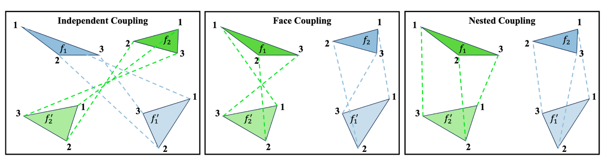
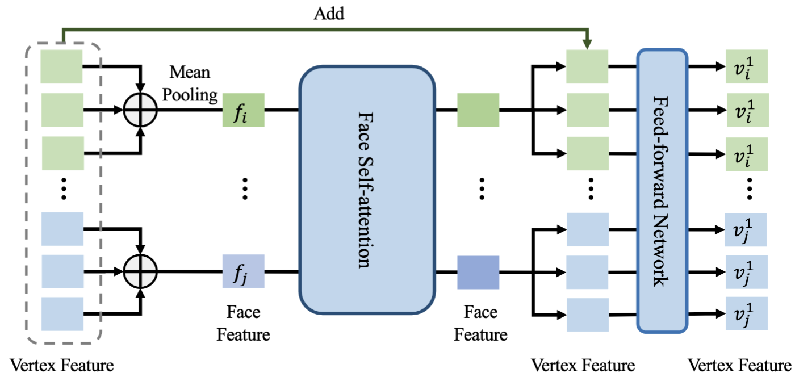

MeshFlow: Mesh Generation with Equivariant Flow Matching
SIGGRAPH 2026

Abstract
Meshes are among the most common 3D scene representations, but directly generating meshes is challenging because the representation contains important symmetries, including permutation invariance of faces and vertices. MeshFlow learns to generate triangle meshes directly as triangle soups, avoiding the need to serialize meshes into long autoregressive sequences. We adopt equivariant optimal-transport flow matching models that respect the key symmetries of triangle soups: arbitrary permutations of faces and permutations of the vertices within each face.
Toward this goal, we propose a simple yet effective modification to the Diffusion Transformer architecture, resulting in a scalable network capable of modeling a velocity field while maintaining the desired equivariance. We further introduce an optimal-transport-based training objective that improves convergence by eliminating supervision signals that violate these symmetries. MeshFlow achieves mesh quality comparable to state-of-the-art autoregressive mesh generators while providing about an 18× speedup during inference.
Symmetries in Triangle Soups
MeshFlow represents a mesh as a triangle soup, an unordered set of triangular faces. This representation has two nested symmetries: the faces can be arbitrarily permuted, and the vertices inside each triangle can be permuted without changing the represented geometry.
Nested Optimal Transport
A naive noise-data correspondence can create training signals that depend on arbitrary face and vertex orderings. MeshFlow defines the coupling cost over the orbit of the triangle soup: an inner assignment first finds the best vertex permutation for every face pair, and an outer Hungarian assignment then matches faces using these symmetry-aware costs.

Equivariant Diffusion Transformer
EquiDiT adapts a Diffusion Transformer-style architecture to triangle soups without using positional encodings that would break equivariance. It embeds vertices, pools them into face features, applies self-attention over unordered faces, and broadcasts the updated face context back to vertex-level predictions.

Gallery
Limitations
Cost of optimal-transport coupling. While our nested optimal-transport coupling improves training, it relies on the Hungarian algorithm, whose O(N3) cost over faces becomes expensive for large meshes. Faster approximations or alternative assignment schemes are a promising direction for reducing this overhead.
Imperfect generation quality. Generated meshes still occasionally contain artifacts such as missing or overlapping faces, which may require light post-processing to repair.
BibTeX
@inproceedings{meshflow,
title = {MeshFlow: Mesh Generation with Equivariant Flow Matching},
author = {Sun, Qi and Nakayama, Kiyohiro and Yan, Jing Nathan and Huang, Qixing and Rush, Alexander and Guibas, Leonidas and Wetzstein, Gordon and Liao, Jing and Yang, Guandao},
booktitle = {ACM SIGGRAPH Conference Papers},
year = {2026}
}